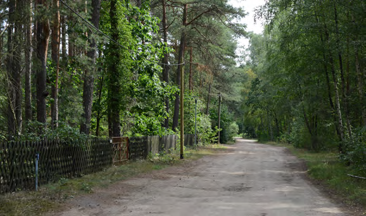

Intransparenter Ausbau von Glasfaseranschlüssen

Breitbandausbau wird vom Staat mit Milliarden gefördet
In Borkheide wurde das Geld verschwendet, weil unbewohnte Gartenlauben teilweise mit Glasfaseranschlüssen versorgt wurden
Im Landkreis Potsdam-Mittelwark wurden 48 Millionen Euro in den Breitbandausbau investiert. Die Mittel wurden vom Bund(50%), vom Land Brandenburg(40%) und dem Kreis(10%) bereitgestellt.
Das Problem bei dem Ausbau war, dass nur Anschlussstellen unterhalb von 30 Megabits pro Sekunde förderfähig waren. Dadurch blieb Gewerbetreibenden, wie dem örtlichen Hotel, ein Glasfaseranschluss verwehrt, während teilweise unbewohnte Gartenlauben mit Breitbandversorgung vorbereitet wurden. Dadurch wurde am Bedarf der Bürger vorbei gebaut im Wert von 16.000 Euros.
<>